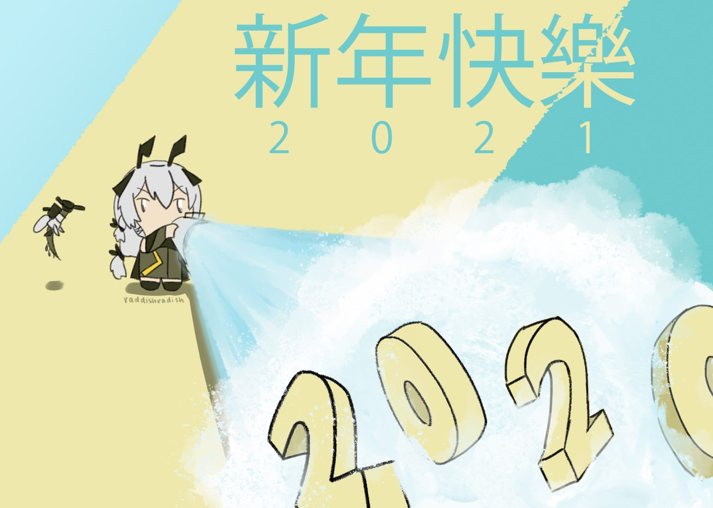

Art
I mainly do digital art of characters I like from games! There is zero stylistic consistency; I just draw however I feel like drawing.
Pokémon
My favorite Pokémon is actually Arcanine which I...never draw for some reason.
Alolan Exeggutor redesigned as a Monster Hunter boss. It's my Zoom background so I have an easy fun fact about myself to share.
Shiny Rayquaza done with the polygonal lasso tool. It was supposed to be a redraw of a shiny Mega Rayquaza I drew in 8th grade, but I forgot I drew the mega version.
{kind=link}

Krokorok drawn with the polygonal lasso tool as a gift for a friend.
Flareon and Torchic cuddling, drawn as a donation commission.
My dear Coalossal James and Gallade Gatorade would constantly fight when I went camping in Pokémon Sword. The background is very lazy HAHAHA.
A dabbing Rowlet and a distressed Rowlet, drawn as a gift for a friend.
Gacha degeneracy
I do not spend a single cent on these predatory games, but I am unfortunately still giving them a lot of my time...
Hu Tao from Genshin Impact is very cute and very powerful and has a fun personality, so I made this drawing of her as an offering to RNGsus. It worked!
Beidou from Genshin Impact in a sea of lights. I was experimenting with painting for the ~vibes~ rather than detail and accuracy...so it looks really bad blown-up like this.
Weedy from Arknights yeeting away the old year, drawn to as an offering to RNGsus, who was cruel to me...though I did get her in the end. The text on the top is happy new year in Chinese!
{kind=link}
Texas from Arknights w/ pose based off some screenshot of Nishinoya from Haikyuu.